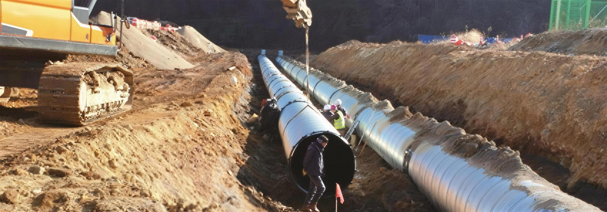
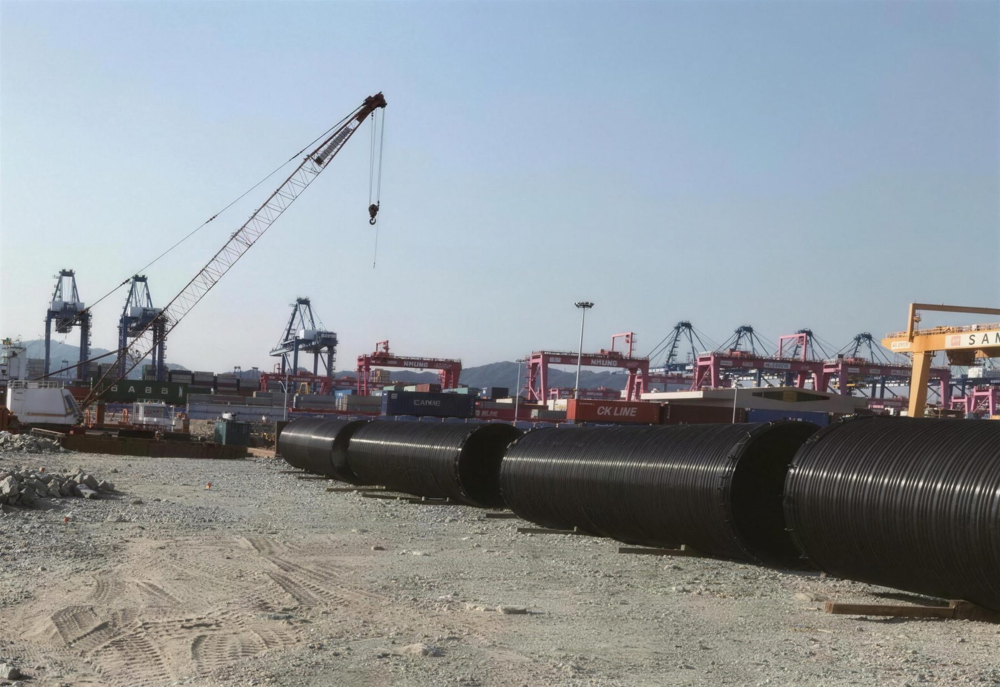

波形鋼管施工Installing corrugated steel pipe파형강관 시공
波形鋼管在經濟性與施工性上優於其他結構物，因此每個施工階段的品質管理極為重要。Corrugated pipe is economical and quick to build, which makes quality control at every stage essential.파형강관은 경제성과 시공성이 다른 구조물보다 뛰어나므로, 시공 단계마다 품질관리가 매우 중요합니다.
管與周圍土壤共同受力Pipe and soil work together관과 주변 흙이 함께 하중을 받습니다
鋼管受上方載重產生一定程度的變形時，側面會產生對應此位移的被動土壓力來支撐結構物。因此周圍地盤的材料選擇與適當壓實（尤其是楔形部位）至關重要。When the pipe deflects under load from above, passive earth pressure develops at its sides to support it. Backfill selection and proper compaction, especially in the haunch zone, are therefore critical.관이 상부 하중으로 어느 정도 변형되면, 측면에 그 변위에 대응하는 수동토압이 생겨 구조물을 지지합니다. 그래서 주변 지반 재료 선택과 적절한 다짐(특히 쐐기부)이 매우 중요합니다.
五個步驟Five steps다섯 단계
管溝開挖Trenching굴착
依道路工程標準施工規範。管溝寬度盡量縮小，開挖壁面保持垂直。Per standard road specifications. Keep the trench narrow with vertical walls.도로공사 표준시방서를 따릅니다. 굴착 폭은 되도록 좁게, 굴착면은 수직으로.
基礎地盤Bedding기초 지반
柔性管不以混凝土作基礎，使用砂或砂質土，依地盤條件均勻夯實。No concrete bedding for flexible pipe; sand or sandy soil compacted evenly.연성관은 콘크리트 기초를 쓰지 않고, 모래나 사질토를 지반 조건에 맞게 고르게 다집니다.
安裝Laying부설
依設計圖說坡度鋪設。預期嚴重沉陷時，預先加算沉陷量於安裝高程。Lay to the design gradient; add expected settlement to the invert level where needed.설계도의 경사대로 부설합니다. 큰 침하가 예상되면 침하량을 부설 고에 미리 더합니다.
回填壓實Backfill되메움 다짐
左右兩側同高，每層完成厚度約 150 mm，乾燥密度 95% 以上；管線下半部特別留意。Raise both sides equally in ~150 mm layers to ≥ 95% dry density; take care below the springline.좌우를 같은 높이로, 층당 완성 두께 약 150 mm, 건조밀도 95% 이상. 관 하반부를 특히 주의합니다.
填土Cover성토
最小填土高度自鋪面底層起算 300 mm 以上，或取 D/5 中的較大值；材料宜與回填相同。Minimum cover is the greater of 300 mm below pavement or D/5, using backfill material.최소 성토고는 포장 하면부터 300 mm 이상 또는 D/5 중 큰 값. 재료는 되메움재와 같게 합니다.
管徑別管溝寬度Trench width by diameter관경별 굴착 폭
| 管徑Dia.관경 (mm) | 300 | 350 | 400 | 450 | 500 | 600 |
|---|---|---|---|---|---|---|
| 管溝寬度Width굴착 폭 (mm) | 700 | 800 | 900 | 1,000 | 1,100 | 1,200 |
基礎最小厚度（管徑 900 mm 以下）Minimum bedding (D ≤ 900 mm)기초 최소 두께 (관경 900 mm 이하)
| 地盤Ground지반 | 最小厚度Min. thickness최소 두께 | 基礎寬度Width기초 폭 |
|---|---|---|
| 一般地盤Normal일반 지반 | 200 mm | D |
| 岩質地盤Rock암반 | 200 mm | D |
| 軟弱地盤Soft연약 지반 | 500 mm | 2D – 3D |
填土高度超過 5,000 mm 時，每增加 1,000 mm，厚度需增加 40 mm。Above 5,000 mm of fill, add 40 mm thickness per additional 1,000 mm.성토고가 5,000 mm를 넘으면 1,000 mm 늘 때마다 두께를 40 mm 늘립니다.
REXSTEEL 施工照片REXSTEEL site photosREXSTEEL 시공 사진
韓國施工現場。Projects in Korea.한국 시공 현장.




需要施工技術諮詢？Need installation advice?시공 기술 상담이 필요하신가요?
歡迎來信洽詢施工技術問題。Write to us with your installation questions.시공 기술 문의는 메일로 주세요.